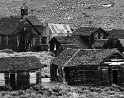
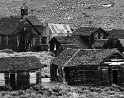

 8/23/09 10:00 AM
 8/23/09 10:00 AMModel: DMC-TZ5
focalLength35mm: 216.9mm
meteringMode: Spot
isoEquivalent: 100
exposureTime: 1/125s
Aperture Value: f/4.8
Exposure Bias Value: -33/50 EV
Exposure Program: Program normal
White Balance: Auto white balance
flash: noFlash
resolution: 2572 x 2024
"> 8/23/09 10:36 AM
Model: DMC-TZ5
focalLength35mm: 28.0mm
meteringMode: Center weighted average
isoEquivalent: 400
exposureTime: 1/40s
Aperture Value: f/3.3
Exposure Bias Value: 0 EV
Exposure Program: Program normal
White Balance: Auto white balance
flash: noFlash
resolution: 2610 x 2088
">